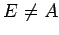

Inhalt Index DeskTop Bronstein

 Wahrscheinlichkeitsrechnung und Mathematische Statistik Wahrscheinlichkeitsrechnung Ereignisse, Häufigkeiten und Wahrscheinlichkeiten Ereignisse
Wahrscheinlichkeitsrechnung und Mathematische Statistik Wahrscheinlichkeitsrechnung Ereignisse, Häufigkeiten und Wahrscheinlichkeiten Ereignisse


Alle Ergebnisse eines Versuches, bei dem bestimmte Bedingungen eingehalten werden und bei dessen Ablauf das Resultat im Rahmen verschiedener Möglichkeiten ungewiß ist, werden in der Wahrscheinlichkeitsrechnung als Ereignisse bezeichnet und in der sogenannten Ereignismenge  zusammengefaßt. Man unterscheidet das sichere, das unmögliche und das zufällige Ereignis. Das sichere Ereignis tritt bei jeder Wiederholung eines gegebenen Versuches innerhalb einer Ereignismenge ein, das unmögliche bei keinem Versuch; das zufällige Ereignis kann eintreten oder auch nicht. Alle möglichen einander ausschließenden Ausgänge eines Versuches heißen seine Elementarereignisse. Bezeichnet man die Ereignisse innerhalb einer Ereignismenge
zusammengefaßt. Man unterscheidet das sichere, das unmögliche und das zufällige Ereignis. Das sichere Ereignis tritt bei jeder Wiederholung eines gegebenen Versuches innerhalb einer Ereignismenge ein, das unmögliche bei keinem Versuch; das zufällige Ereignis kann eintreten oder auch nicht. Alle möglichen einander ausschließenden Ausgänge eines Versuches heißen seine Elementarereignisse. Bezeichnet man die Ereignisse innerhalb einer Ereignismenge  mit , insbesondere das sichere Ereignis mit , das unmögliche Ereignis mit , so gelten die in der folgenden Tabelle definierten Verknüpfungen.
mit , insbesondere das sichere Ereignis mit , das unmögliche Ereignis mit , so gelten die in der folgenden Tabelle definierten Verknüpfungen.
| Bezeichnung | Schreibweise | Bedeutung |
| 1. Entgegengesetztes Ereignis zu A: | ||
| 2. Summe der Ereignisse A und B: | A+B | A+B tritt genau dann ein, wenn entweder A oder B eintritt, oder wenn beide Ereignisse zusammen eintreten. |
| 3. Produkt der Ereignisse A und B: | AB | AB tritt genau dann ein, wenn sowohl A als auch B eintritt. |
| 4. Differenz der Ereignisse A und B: | A-B | A-B tritt genau dann ein, wenn A eintritt und B nicht einritt. |
| 5. Aufeinander folgende Ereignisse: | ||
| 6. Elementares Ereignis: | E | E läßt sich nicht als Summe A+B mit  und darstellen. |
| 7. Zusammengesetztes Ereignis | Das Ereignis ist nicht elementar. | |
| 8. Gegenseitig ausschliessende Ereignisse A und B: | AB=O | Die Ereignisse A und B können nicht gemeinsam auftreten. |